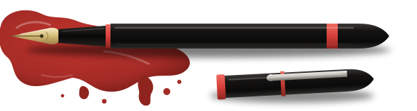
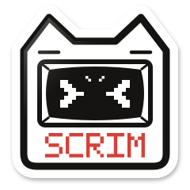

Path to
Glory
MENTOR EVENT
(01) Pre-season mentor event:
11/0911/22
(01) Pre-season mentor event:


ScrimFCFSMockFinalEight main mentors, one per team. Each file carries their playstyle, character pool, competitive history and a short about-me.
On standby for players on any team. Ask them about your character or role, request a team review or an individual session, or join the topic sessions they run.
Pick a coach to see their week. Click a start time, choose how long, and send a request; the coach accepts or declines it. Times are Eastern (ET), 8 AM to 4 AM, and the request card also shows your own time ().
Every team, its mentor, and the checkpoint standings.
Everything from the event is open to the public, so the whole scene can learn from it.
Availability works like booking a doctor's appointment: a mentor posts free hours, players request a slot inside them, and the mentor accepts or declines.